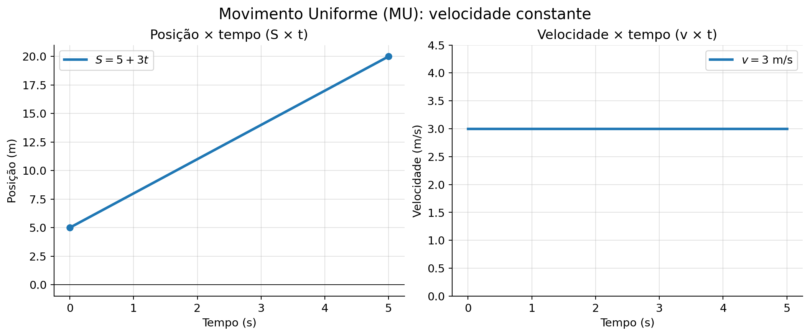
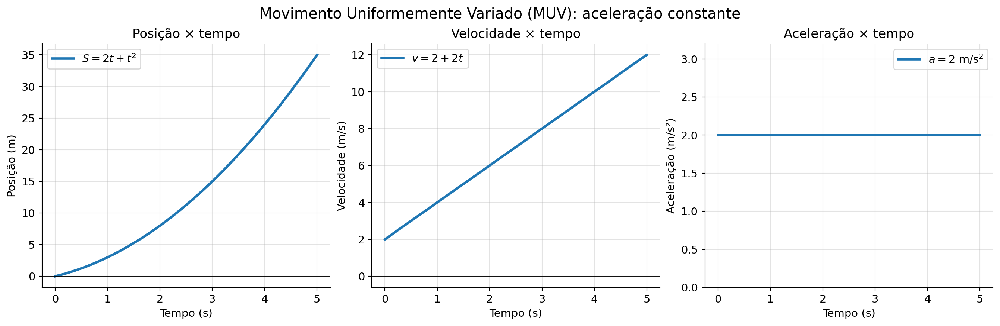
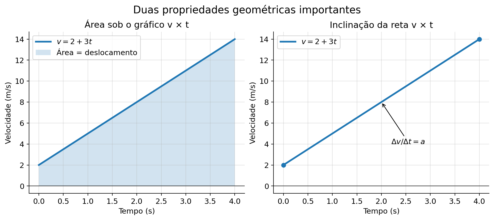

Os gráficos descrevem como a posição ($S$), a velocidade ($v$) e a aceleração ($a$) variam com o tempo. No Movimento Uniforme (MU), a velocidade é constante: o gráfico $S \times t$ é uma reta e o gráfico $v \times t$ é horizontal.
No Movimento Uniformemente Variado (MUV), a aceleração é constante: o gráfico $a \times t$ é horizontal, o gráfico $v \times t$ é uma reta e o gráfico $S \times t$ é uma parábola. A inclinação de $S \times t$ representa a velocidade; a inclinação de $v \times t$ representa a aceleração. A área algébrica sob $v \times t$ representa o deslocamento.
1. Como ler um gráfico de movimento
Em um gráfico de movimento, o tempo costuma ser representado no eixo horizontal. A grandeza que queremos analisar fica no eixo vertical. Antes de interpretar a curva, observe o nome dos eixos e suas unidades.
Gráfico $S\times t$: relaciona posição e tempo. A inclinação indica a velocidade.
Gráfico $v\times t$: relaciona velocidade e tempo. A inclinação indica a aceleração e a área algébrica indica o deslocamento.
Gráfico $a\times t$: relaciona aceleração e tempo. A área algébrica indica a variação da velocidade.
A inclinação entre dois pontos é calculada por $m=\Delta y/\Delta x$. Portanto, no gráfico $S\times t$, $v=\Delta S/\Delta t$; no gráfico $v\times t$, $a=\Delta v/\Delta t$. Não se deve usar simplesmente o valor visual do ângulo da reta: a inclinação depende também das escalas dos eixos.
2. Gráficos do Movimento Uniforme (MU)
No MU, a velocidade escalar é constante e a aceleração é nula ($a=0$). A função horária da posição é $S=S_0+vt$.

Figura 1: No MU, o gráfico $S\times t$ é uma reta cuja inclinação representa a velocidade. O gráfico $v\times t$ é uma reta horizontal, pois a velocidade não muda.
Gráfico $S\times t$:
Reta crescente: $v>0$, movimento progressivo.
Reta decrescente: $v<0$, movimento retrógrado.
Reta horizontal: $v=0$, repouso.
Quanto maior o módulo da inclinação, maior o módulo da velocidade.
Gráfico $v\times t$: a linha horizontal acima do eixo do tempo representa velocidade positiva; abaixo, velocidade negativa. A área algébrica entre a linha e o eixo do tempo corresponde ao deslocamento $\Delta S$. Se a velocidade for positiva durante todo o intervalo, o módulo dessa área também será a distância percorrida.
Exemplo: um móvel parte de $S_0=5\,\text{m}$ com velocidade constante $v=3\,\text{m/s}$. Após $4\,\text{s}$, sua posição é $S=5+3\cdot4=17\,\text{m}$. No gráfico $S\times t$, a reta passa pelos pontos $(0;5)$ e $(4;17)$.
3. Gráficos do Movimento Uniformemente Variado (MUV)
No MUV, a aceleração escalar é constante. As funções horárias são $v=v_0+at$ e $S=S_0+v_0t+\frac{at^2}{2}$.

Figura 2: No exemplo representado, $S_0=0$, $v_0=2\,\text{m/s}$ e $a=2\,\text{m/s}^2$. A posição varia quadraticamente, a velocidade varia linearmente e a aceleração permanece constante.
$S\times t$: parábola. Se $a>0$, a concavidade é voltada para cima; se $a<0$, para baixo.
$v\times t$: reta. Sua inclinação é a aceleração. Reta crescente indica $a>0$; reta decrescente indica $a<0$.
$a\times t$: reta horizontal, pois a aceleração é constante. Acima do eixo, $a>0$; abaixo, $a<0$.
O sinal da aceleração, isoladamente, não informa se o móvel está aumentando ou diminuindo o módulo da velocidade. O movimento é acelerado quando velocidade e aceleração têm o mesmo sinal; é retardado quando têm sinais opostos.
No gráfico $S\times t$, um vértice indica velocidade instantânea nula. Há inversão do sentido quando a velocidade muda de sinal nesse instante.
4. Área e inclinação: o que cada uma representa?

Figura 3: A área algébrica sob o gráfico $v\times t$ fornece o deslocamento. A inclinação da reta nesse gráfico fornece a aceleração.
Para um gráfico $v\times t$, a área pode ter sinal positivo ou negativo. Áreas acima do eixo do tempo são positivas; áreas abaixo são negativas. O deslocamento é a soma algébrica dessas áreas. A distância percorrida, por sua vez, soma os módulos das áreas de cada trecho.
Para um gráfico $a\times t$, a área algébrica corresponde a $\Delta v=v-v_0$. Assim, uma aceleração constante durante um intervalo produz $\Delta v=a\Delta t$.
Unidades: a inclinação de $S\times t$ tem unidade m/s; a inclinação de $v\times t$ tem unidade m/s²; a área de $v\times t$ tem unidade m; e a área de $a\times t$ tem unidade m/s.
5. Erros comuns na interpretação
Confundir altura do gráfico com inclinação: em $S\times t$, a posição é dada pela altura do ponto, mas a velocidade depende da inclinação.
Confundir área com distância em qualquer situação: a área algébrica de $v\times t$ fornece deslocamento, não necessariamente distância percorrida.
Supor que $a<0$ significa sempre movimento retardado. Isso depende também do sinal da velocidade.
Esquecer as unidades dos eixos e das grandezas calculadas.
💡 Física em Ação
📊 Telemetria na Fórmula 1
Engenheiros de corrida analisam os gráficos de velocidade versus tempo emitidos via telemetria para calcular o ponto exato em que o piloto deve frear ou acelerar antes das curvas.
📱 Sensores de Smartphones
Os acelerômetros dos celulares registram gráficos de aceleração ao longo do tempo para contagem de passos, identificação de quedas e orientação da tela.
✅ 5 Questões Resolvidas (R 1 a 5)
R 1: Deslocamento pela Área do Gráfico $v \times t$
Enunciado: Um móvel apresenta um gráfico $v \times t$ retangular, onde a velocidade se mantém constante em $12\text{ m/s}$ durante um intervalo de $10\text{ s}$. Calcule o deslocamento do móvel no período.
Resolução:
A área sob o gráfico $v \times t$ é a área de um retângulo (base $\times$ altura):
$\Delta S \stackrel{N}{=} \text{Área} = \text{base} \times \text{altura} = 10 \times 12 = \mathbf{120\text{ m}}$.
R 2: Cálculo da Aceleração via Gráfico $v \times t$
Enunciado: O gráfico da velocidade em função do tempo de um móvel é uma reta que passa pelos pontos $(t_1 = 0\text{ s}, v_1 = 5\text{ m/s})$ e $(t_2 = 4\text{ s}, v_2 = 25\text{ m/s})$. Determine a aceleração escalar do movimento.
Resolução:
A aceleração é numericamente igual à inclinação da reta:
$a = \frac{\Delta v}{\Delta t} = \frac{v_2 - v_1}{t_2 - t_1} = \frac{25 - 5}{4 - 0} = \frac{20}{4} = \mathbf{5\text{ m/s}^2}$.
R 3: Leitura de Gráfico de Posição Parabólico
Enunciado: O gráfico $S \times t$ de um MUV é uma parábola com concavidade voltada para baixo cujo vértice ocorre no instante $t = 3\text{ s}$. Qual o significado físico do vértice?
Resolução:
No vértice da parábola do gráfico $S \times t$, a reta tangente é horizontal, o que significa que a velocidade escalar é nula ($v = 0$). Esse instante indica a inversão do sentido do movimento do móvel.
R 4: Deslocamento em Gráfico Trapezoidal
Enunciado: Um gráfico $v \times t$ possui a forma de um trapézio: a velocidade sobe de $0$ a $20\text{ m/s}$ de $t = 0$ a $t = 2\text{ s}$, permanece constante em $20\text{ m/s}$ até $t = 6\text{ s}$ e cai a zero em $t = 8\text{ s}$. Calcule o deslocamento total.
Resolução:
A área de um trapézio é dada por $\frac{(B + b) \cdot h}{2}$:
• Base maior ($B$) = $8 - 0 = 8\text{ s}$
• Base menor ($b$) = $6 - 2 = 4\text{ s}$
• Altura ($h$) = $20\text{ m/s}$
$\Delta S \stackrel{N}{=} \frac{(8 + 4) \cdot 20}{2} = \frac{12 \cdot 20}{2} = \mathbf{120\text{ m}}$.
R 5: Variação de Velocidade via Gráfico $a \times t$
Enunciado: O gráfico da aceleração pelo tempo $a \times t$ mostra um valor constante $a = 3\text{ m/s}^2$ durante $6\text{ s}$. Se a velocidade inicial era $v_0 = 4\text{ m/s}$, determine a velocidade final.
Resolução:
A área sob o gráfico $a \times t$ é numericamente igual à variação de velocidade ($\Delta v$):
$\Delta v \stackrel{N}{=} \text{Área} = a \cdot \Delta t = 3 \cdot 6 = 18\text{ m/s}$.
Como $\Delta v = v - v_0 \implies 18 = v - 4 \implies v = \mathbf{22\text{ m/s}}$.
✍️ 10 Questões Propostas (P 6 a 15)
P 6: Velocidade em Gráfico $S \times t$ Reta
Enunciado: Um gráfico $S \times t$ mostra uma reta que parte da posição $S = 10\text{ m}$ em $t = 0$ e atinge $S = 50\text{ m}$ em $t = 5\text{ s}$. Qual é a velocidade escalar do móvel?
Resolução: A velocidade é a inclinação da reta:
$v = \frac{\Delta S}{\Delta t} = \frac{50 - 10}{5 - 0} = \frac{40}{5} = \mathbf{8\text{ m/s}}$.
P 7: Identificação do Sinal da Aceleração
Enunciado: Um móvel apresenta um gráfico $S \times t$ parabólico com concavidade voltada para cima. Qual é o sinal de sua aceleração?
Resolução: Em gráficos $S \times t$ parabólicos, a concavidade voltada para cima ($\cup$) indica estritamente que a aceleração escalar é positiva ($a > 0$).
P 8: Área Triangular no Gráfico $v \times t$
Enunciado: Em um gráfico $v \times t$, a velocidade cresce de $0$ a $30\text{ m/s}$ em um intervalo de $6\text{ s}$ formando um triângulo. Determine a distância percorrida.
Resolução: $\Delta S \stackrel{N}{=} \text{Área do triângulo} = \frac{\text{base} \times \text{altura}}{2} = \frac{6 \times 30}{2} = \mathbf{90\text{ m}}$.
P 9: Análise de Inversão de Sentido em $v \times t$
Enunciado: No gráfico $v \times t$, a reta cruza o eixo do tempo no instante $t = 4\text{ s}$. O que ocorre nesse instante específico com o móvel?
Resolução: Quando a curva do gráfico $v \times t$ cruza o eixo do tempo, a velocidade passa de positiva para negativa (ou vice-versa), marcando o instante em que o móvel inverte o sentido do movimento ($v = 0$).
P 10: Comparação de Dois Móveis em $S \times t$
Enunciado: No gráfico $S \times t$, duas retas correspondentes a dois móveis $A$ e $B$ se cruzam no instante $t = 5\text{ s}$. Qual o significado físico dessa intersecção?
Resolução: O ponto de cruzamento entre duas curvas ou retas em um gráfico $S \times t$ indica que ambos os corpos ocupam a mesma posição no mesmo instante, ou seja, representa o encontro dos móveis.
P 11: Repouso no gráfico posição × tempo
Um gráfico $S\times t$ apresenta uma reta horizontal em $S=12\,\text{m}$ durante $8\,\text{s}$. Determine a velocidade do móvel e explique o significado físico da reta.
Resolução: A posição não varia. Logo, $v=\Delta S/\Delta t=0/8=0\,\text{m/s}$. O móvel permanece em repouso na posição de $12\,\text{m}$.
P 12: Velocidade negativa no MU
Um móvel obedece a $S=40-5t$, com posição em metros e tempo em segundos. Determine a posição inicial, a velocidade e a posição no instante $t=6\,\text{s}$.
Resolução: Comparando com $S=S_0+vt$, temos $S_0=40\,\text{m}$ e $v=-5\,\text{m/s}$. Para $t=6\,\text{s}$: $S=40-5\cdot6=10\,\text{m}$. O sinal negativo indica movimento retrógrado.
P 13: Aceleração pelo gráfico v × t
A velocidade de um móvel aumenta uniformemente de $4\,\text{m/s}$ para $24\,\text{m/s}$ em $5\,\text{s}$. Determine a aceleração.
Resolução: A aceleração é a inclinação do gráfico $v\times t$: $a=\Delta v/\Delta t=(24-4)/5=4\,\text{m/s}^2$.
P 14: Deslocamento com velocidade negativa
Durante $4\,\text{s}$, um móvel mantém velocidade constante de $-6\,\text{m/s}$. Calcule o deslocamento e a distância percorrida.
Resolução: O deslocamento é a área algébrica: $\Delta S=v\Delta t=-6\cdot4=-24\,\text{m}$. Como não há mudança de sentido, a distância percorrida é $24\,\text{m}$.
P 15: Interpretação conjunta dos sinais
Em certo intervalo, um móvel apresenta velocidade negativa e aceleração positiva. O módulo da velocidade aumenta ou diminui? Classifique o movimento quanto à rapidez.
Resolução: Velocidade e aceleração têm sinais opostos. Portanto, o módulo da velocidade diminui: o movimento é retardado nesse intervalo.
🎓 TESTES (T 16 a 20)
🚧 EM BREVE!
Questões de vestibulares serão disponibilizadas em breve.